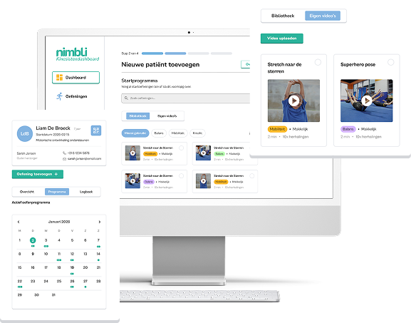
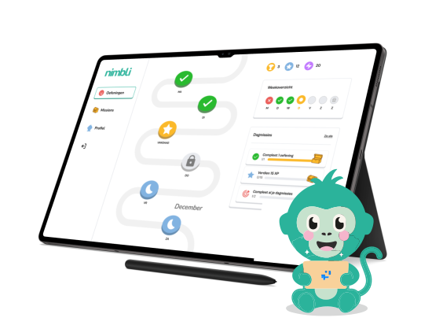

Individueel
€0
/ jaar
- 1 gebruiker
- Tot 3 patiënten toevoegen en opvolgen
- Opzeggen wanneer je wilt
Nimbli helpt kinderen thuis oefenen met speelse challenges, terwijl jij als kinesitherapeut je objectieve data en tijdswinst krijgt zonder extra werk.
Geen verplichtingen


De plek waar beweging leuk wordt én overzichtelijk blijft. Volg vooruitgang en zie hoe je kind gemotiveerd blijft om te blijven bewegen.
Naar het portaal
Kies oefeningen, combineer ze tot een speels programma en stuur het digitaal naar huis.
Nimbli motiveert kinderen met challenges, beloningen en directe feedback. Zo oefenen ze consistent en blijven ze gemotiveerd.


Zie exact hoe vaak geoefend werd, hoe correct de beweging was en waar extra begeleiding nodig is.

Kinderen oefenen vaker én correcter dankzij spelelementen, beloningen en directe feedback.

Alles wordt automatisch gelogd. Geen papieren schema’s. Geen manuele opvolging. Geen extra werk.

Laat zien dat je inzet op digitale begeleiding en objectieve opvolging. Dat versterkt vertrouwen bij ouders.

Zie frequentie, kwaliteit van uitvoering en vooruitgang per kind. Geen buikgevoel meer. Alleen meetbare data.
Eén abonnement per praktijk.
Kinderen en ouders gebruiken de app gratis.
Echte ervaringen uit de praktijk.
Emma vond oefenen eerst vervelend, maar sinds we Nimbli gebruiken vraagt ze er zelf naar. De vooruitgang is echt zichtbaar en ze is veel zelfverzekerder geworden.
Nimbli heeft mijn praktijk getransformeerd. Ik kan effectiever werken, de therapietrouw is enorm gestegen en ik zie betere resultaten bij mijn patiëntjes.
Als ouder geeft Nimbli rust. We hebben een duidelijke structuur, Noah blijft gemotiveerd en ik kan eenvoudig communiceren met de kinesist over zijn voortgang.
Start vandaag met een gratis proefperiode en ervaar hoe Nimbli je opvolging automatiseert.
Registreren